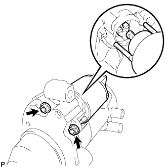

STARTER > REASSEMBLY |
| 1. INSTALL PLANETARY GEAR |
Apply high-temperature grease to the planetary gears and pin parts of the planetary shaft as shown in the illustration.
Install the 3 planetary gears to the starter center bearing clutch.
| 2. INSTALL STARTER ARMATURE PLATE |
 |
Align the protrusion of the starter center bearing clutch sub-assembly with the notch of the starter armature plate.
| *1 | Protrusion |
| *2 | Notch |
Insert the starter armature plate to the starter center bearing clutch.
| 3. INSTALL STARTER ARMATURE ASSEMBLY |
Install the starter armature to the starter center bearing clutch.
| 4. INSTALL STARTER YOKE ASSEMBLY |
Align the protrusion of the starter center bearing clutch with the notch of the starter yoke and install the starter yoke.
| *1 | Protrusion |
| *2 | Notch |
| 5. INSTALL STARTER COMMUTATOR END FRAME ASSEMBLY |
Install the starter brush holder.
Connect the 4 brushes to the starter brush holder.
Using a screwdriver, hold back the brush spring.
Connect the brush to the starter brush holder.
Install a new dust starter protector.
Align the starter commutator end frame rubber with the groove of the starter yoke.
| *1 | Rubber |
| *2 | Groove |
Install the starter commutator end frame with the 2 screws.
| 6. INSTALL STARTER DRIVE HOUSING ASSEMBLY |
Apply high-temperature grease to the starter pinion drive lever as shown in the illustration.
 |
Install the starter pinion drive lever to the starter center bearing clutch.
Align the protrusion of the starter center bearing clutch with the notch inside the starter drive housing.
| *1 | Protrusion |
| *2 | Notch |
 |
Using a T30 "TORX" socket wrench, install the starter drive housing with the 2 bolts.
| 7. INSTALL MAGNET STARTER SWITCH ASSEMBLY |
|  |
Temporarily install the magnet starter switch by hooking its tip onto the upper side of the starter pinion drive lever.
Install the 2 nuts.
Connect the lead wire to terminal C with the nut.